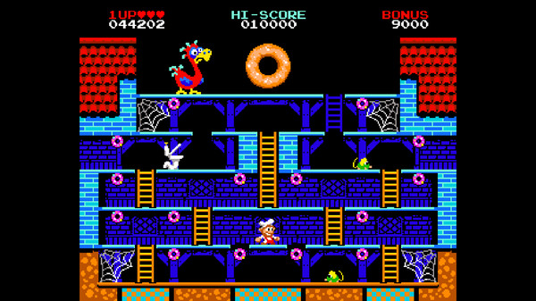
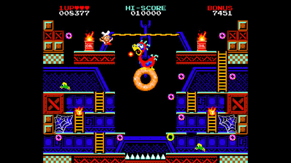
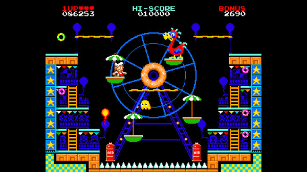
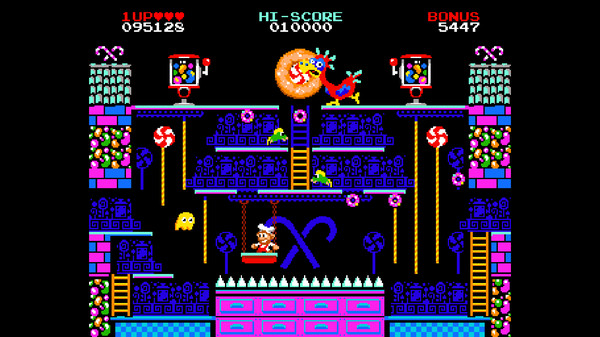
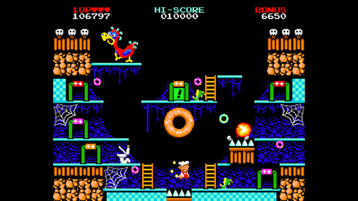

Written 2-21-2023
Over this last weekend I picked up a game called Donut Dodo at the recommendation of @cmuratori on twitter. It's a newly released retro arcade game which aims to play like a clash between Donkey Kong and Burgertime, while straddling the line between the old school gamefeel and controls that are up to modern standards. I played it for a couple of hours and figured I'd chronicle some of my feelings.
After doing a little bit of research (aka watching this video and checking out their twitter and steam page), I gathered that this dev worked for a time at Ubisoft, specifically on Rayman, and has now made a few pixel platforms, released on steam and switch. I'm interested in trying out their other games, but, judging from steam reviews and general tone of each of the games, it seems like Donut Dodo is them hitting a stride, or perhaps filling a hole in the modern arcade game market.
The game is super short. You can do a playthrough in ~5 minutes if you get the rhythm down. The twist to this is that, once you beat it, the game loops, adding more obstacles for the next play through. I never got to the third loop, but the second loop adds PacMan style ghosts that move from one side of the screen to the next, about once every 30 seconds. This is sort of a light rouge-like aspect to this, reinforcing the idea that most rogue-likes are more derived from arcade than Rogue.
There are 5 levels, each a single screen, which contain ~15 donuts. Add on some fireballs, green rats, and a bloodthirsty toilet. And that's pretty much a level. The game keeps a sense of novelty by giving each level it's own theme (factory, candy shop, circus) and a gameplay gimmick. Here's a list of the levels and one or two of their gimmicks:
- Level 1 is the most plain of all the levels, but in some ways that makes it the most impressive. Upon entering this first level the player is introduced to all the basic mechanics, all without any sort of tutorial, so this first level does a couple interesting things. First, the ladder to the Dodo's donut doesn't appear till you collect all the smaller donuts, indicating to the player that (1) you need to collect all the donuts and (2) after you do that you collect the large donut, which gets all shiny at the end. By the end of this first level, you understand all the objectives and now the next levels can start to play around with things.

- Level 2 is where more of the speedrunning aspect of the game is shown off. In the first level, order doesn't matter near as much since you can easily switch up your path. This is made possible by the symetric ladders and connected 3rd and 1st floors (meaning you can move to either side of the map from multiple floors. Level two switches things up, making it so the top level is only accessible from the right side of the map, but removing the 1st floor ladder from the right side. This asymmetry is bound to suck up some quarters as the player has to stop and think how exactly he can even get to some parts of the map. Level two also introduces fire guys, that act as Donkey Kong barrels, and what I'll call the rope, which you can shimmy across. The asymmetry is also used to introduce the rope, since there is a part of the map which is clearly inaccessible without it.

- Level 3 has moving platforms on a ferris wheel and balloons that you have to dodge when moving off and on the ferris wheel. The balloons follow a pretty strict path which makes it hard to get killed while you're on the ferris wheel.I think this enemy serves as an example of how this game, while hard, isn't poorly designed, despite being an old arcade game.

- Level 4 introduces ropes you can climb vertically on and a horizontally moving platform. This level, like 2 and 3, serves as a good example for how mechanics from past levels are combined with a new mechanic all at once. There's no gradual introduction to mechanics, unlike mario, where by the end of a mario level you should have been exposed to a mechanic at 3, or so, varying skill levels. Here the final version of the mechanic is shown off, and it's up to you to understand and get over it. Level 4's ropes also feel pretty good to move around on which I feel is because of the level of control you're given on them. There's no sliding in any direction and movement horizontally is digital in a way that makes moving out of the way of fireballs satisfying.

- Level 5's is a high point for me. On a typical run, level 5 is the last level in the game, bar the fact that the game will just start over, and thus is a sort of frantic apex. The player knows the mechanics and knows that they are just a short series of inputs away from finishing the run, but sweaty palms are like blood in the water for the keen developer. Level 5 has two new things: (1) the map is wholly asymmetrical and (2) the player needs to use the color coded teleporters to get around the map, both of which elevate an already frantic ending, adding an element of arithmetic to the equation as the player has to figure out which teleporter to take where in order to avoid the menacing path of the toilet. That's right the toilet from the first level makes its return too.

With all this in mind its also worth mentioning that there's never any real tutorial outside of the border, stylized to mimic the border of a standup arcade machine, which includes the basic controls. But of course, after a glance at those controls, I wouldn't be surprised if the average (modern) player doesn't test other commonly used buttons to see if there're any unmentioned action buttons. They would however be wrong. The input is restricted to up, down, left, right, and jump.
The movement as a whole approaches things with the goal to never take control away from the player and avoid any cheap or annoying deaths. In this way the game plays out, more often then not, like a puzzle game then a quick-twitch Meatboy style, a style which also makes it more immediately accessible for the speedrunning behaviors which the timer seems to encourage. The jump and in-air movement in particular feel extremely deliberate in its immediate obtuseness; jumps are short, falling is fast, and, once up to speed, there's a large amount of movement friction. This asks the player to relearn the familiar and step into a new opportunity space. It's been some time since I've played a game where I feel this stressed just trying to jump over an enemy, as your boots seem to just barely graze the top of a fireball or rat as you clear them.
Donut Dodo contains much of what I think is best about this generation of games: a retro sensibility (though sensibility is emphasized here), a short but thoughtful length, and a
great soundtrack (yes, its good too).